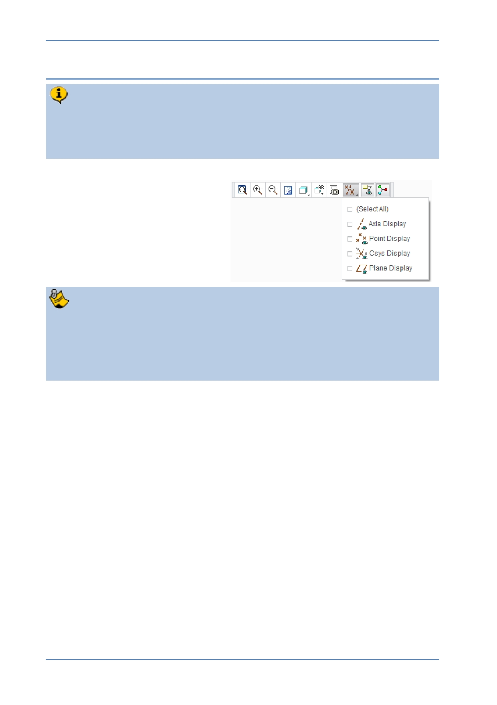

PTC Academic Program
Step 4: Complete the Extrude for the corner block
You will now edit the depth of the Extrude to be 30, extruding equally in both
directions from the sketch plane so that the datum planes are at the center of the
cube; this will be helpful when locating the holes later in this exercise. Extrude is
a sketch based feature and this example used an “Internal” sketch.
1. If necessary, use the Graphics
toolbar to disable the display of
all datum features.
You can change how the extrude is defined either in the dashboard or on the
model. Every element that defines the Extrude feature can be accessed from
the dashboard.
After a feature is complete, you can use Edit Definition to re-open the dashboard
and edit the feature.
© 2012 PTC
Creo Parametric 2.0 Primer
Page 20